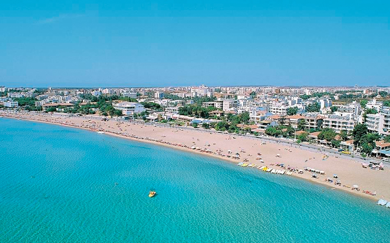
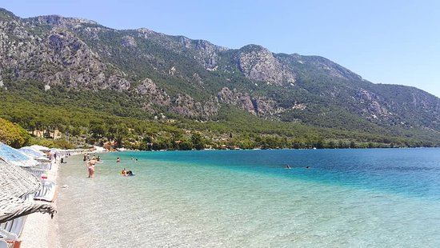
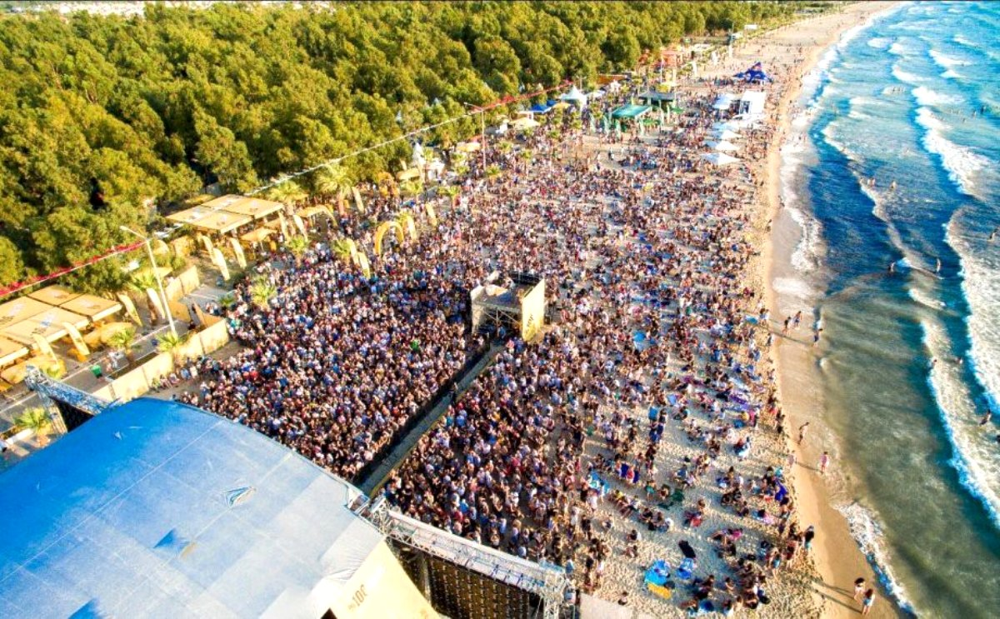

Masmavi suyu, altın rengi kumları ve muhteşem manzaraları ile Aydın plajları ziyaretçilerine denizin, k
umun ve güneşin tadını doyasıya çıkarabilmeleri için keyifli bir atmosfer sunuyor.
1.Altınkum Plajı

Aydın denince akla ilk gelen de Didim’in Altınkum Plajı oluyor. Bu en çok bilineni ve kalabalık olan plajın
ulaşımı da bir o kadar rahat. Altın sarısı kumları ile dikkat çeken Altınkum Plajı’nda aileler için de bir bölüm bulunuyor.
2.Sağtur Plajı

Hem denize girmek hem de kamp yapmak isteyenler için uygun olan Sağtur Plajı, Akkum Plajı olarak da biliniyor.
Araba ile kolaylıkla ulaşabileceğiniz Sağtur Plajı, huzurlu bir deniz keyfi yaşamanız için imkan sunuyor.
3.Kadınlar Plajı

Aydın’ın en çok bilinen gözde plajlarından biri olan Kadınlar Plajı, Kuşadası’nın merkezi bir noktasında yer alıyor. Uzun sahil şeridiyle
dikkat çeken Kadınlar Plajı, adının aksine karma bir plaj… Tüm gün keyifli vakit geçirip, tatilinize renk katmak isterseniz Kadınlar Plajı sizi bekliyor!
4.Akbük Plajı

Didim merkezine 20 km mesafede yer alan Akbük Plajı, sakin atmosfer ve doğal güzellikleri ile kendine hayran bırakıyor.
Uzun bir plaj olan Akbük Plajı, huzurlu bir tatil geçirmeniz için güzel bir alternatif oluşturuyor.
5.Sevgi Plajı

Festival Zamanı Sevgi Plajı
Kuşadası’nın Davutlar Mahallesi’nde bulunan Sevgi Plajı, 550 metre uzunluğuyla Aydın’ın en uzun plajlarından biri olarak biliniyor.
Yaz aylarında oldukça kalabalık olan plaj, yeşillik alanında piknik yapma imkanı da sunuyor.
Kuşadası’nın merkezine 17 mesafede yer alan Sevgi Plajı, bisiklet sürmek isteyenler için de keyifli bir alternatifi oluşturuyor.